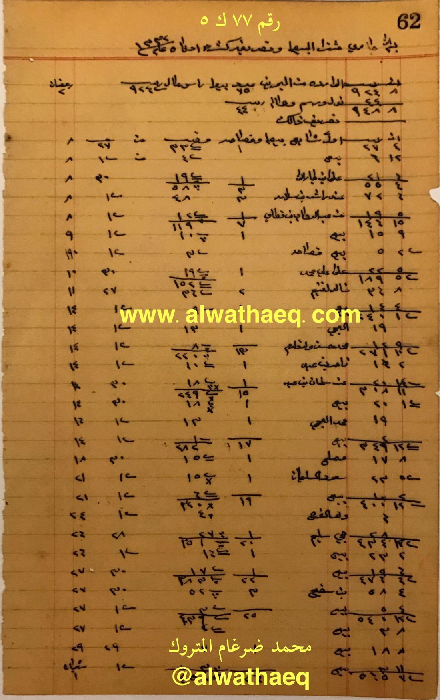

١٩١٤ إلى ١٩١٨ · كشوف حساب التاجر الكويتي محمد بن عبدالله المتروك
عبدالوهاب بن عبدالعزيز بن قطامي ينقل النقود لبيت المتروك
ما هي
في عام ١٩١٧ أُرسلت ٥٠٠ كني بيد عبدالوهاب بن قطامي. وفي عام ١٩١٨ يذكره الدفتر باسمه الكامل، عبدالوهاب بن عبدالعزيز بن قطامي، إلى جانب والده عبدالعزيز بن قطامي، ويسجل تسلمه صرة فيها ٥٠٠ كني.
أهميتها
يذكر دفتر ١٩١٨ الأب والابن معا، ويؤكد نسب عبدالوهاب بن عبدالعزيز في شجرة العائلة.
من المقصود
أكدت العائلة ذلك، ويرد اسمه كاملا في دفتر ١٩١٨: عبدالوهاب بن عبدالعزيز بن قطامي.
صور الصفحات




النص الأصلي
ملاحظات
مقتطفات مطبوعة كما نشرها موقع الوثائق. والكني عملة ترد في هذه الدفاتر. وجميع الدفاتر الأربعة التي تذكره محفوظة في درايف العائلة.
المصادر
موقع الوثائق (alwathaeq.com): دفاتر ورسائل التاجر الكويتي محمد بن عبدالله المتروك، مع شرح وتعليق محمد ضرغام المتروك. الصور كما نشرها موقع الوثائق.
مرجع الأرشيف
- Document 21, book 9 · 1918
- Document 38, book 7 · 1917
كيف كُتب هذا النص: المقتطفات العربية كما نشرها موقع الوثائق. الترجمة الإنجليزية من Claude، يرجى مراجعتها.
افتح في الموقع التفاعلي